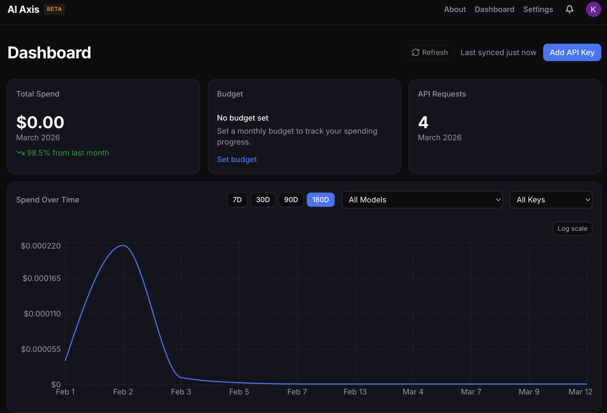
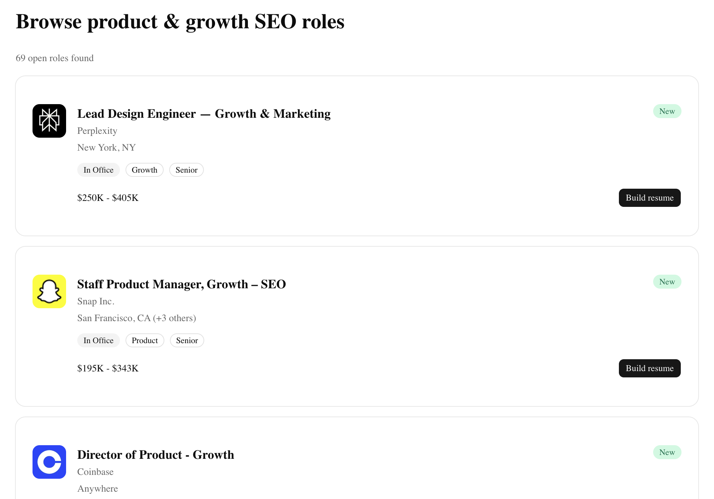

Hi, I'm
Kevin Keene
Product manager. Former SEO & growth advisor.
I spent years figuring out how people discover products on the internet — now I build the products they find.

Hi, I'm
Product manager. Former SEO & growth advisor.
I spent years figuring out how people discover products on the internet — now I build the products they find.
Over the past 10 years, I've seen SEO evolve from a marketing channel to essential product infrastructure.
I started as a consultant during the e-commerce boom of the early-mid 2010's. This was a time when online retailers were rapidly expanding internationally, redesigning for mobile, and replatforming to new technologies. I had the privilege of helping brands like Patagonia, GoPro, and Titleist build durable revenue streams through organic search.
Eventually, I joined NP Digital and managed a team of consultants. At NP Digital, I learned the importance of a product-led approach to SEO, as our most successful client engagements had direct partnership with their internal product orgs. By partnering with product managers at brands like Adobe, Party City, and SoFi, we were able to achieve bottom-line results — not just top-of-funnel traffic.
Those learnings took me to Postman, where I developed the company's organic search function into a product-led growth initiative. With Postman, I partnered with and eventually transitioned to the product org to lead a multi-year roadmap focused on growing their online network (the Postman API Network). We developed an organic acquisition engine that gained tens of thousands of new users in under 12 months.
With the emergence of AI, I've only found the product-led approach to organic discovery matters now more than ever. People are not visiting websites until they are ready to convert, meaning SEO can no longer be thought of as a top-of-funnel channel. The focus needs to be on the bottom-line.
Read my writing about how organic discovery is changing in the era of AI.
Learn moreAll my projects are built using AI coding agents (primarily Claude Code) and powered by APIs.
Why I built it: To better manage my team's rapidly rising AI costs, which were increasingly difficult to track because AI spend is buried across multiple provider dashboards and different models.
How I built it: The product works by retrieving daily usage data from AI APIs (spend, tokens, requests) broken down by model and provider. I created a public beta version, with plans to add more features in the future.
View at aiaxis.net
Why I built it: A number of my SEO colleagues were interested in product management and how to make the transition. This eventually led me to build a niche job board site for those with an SEO background looking to break in or level up in product management.
How I built it: The site fetches job postings from Google Jobs using SERP API. It also includes a resume builder that reads the job postings, parses an uploaded resume, and provides AI-assisted feedback through a chat interface.
View at seoproductmanagers.com
Why I built it: For fun! The internet lore of corporate slop bowls is hilarious. Don't get me wrong, I love Chipotle and the rest, but there's something to be said about how fast casual chains have gone too far into the corporate realm.
How I built it: The site is a personality quiz that matches your answers with a corporate slop bowl archetype (Chipotle, Cava, Sweet Green, etc.). It uses AI prompts fed with user inputs to generate a unique response for every user.
View at corporateslopbowl.com
I'm always open to new opportunities, collaborations, or just a good conversation. Reach out and let's build something together.